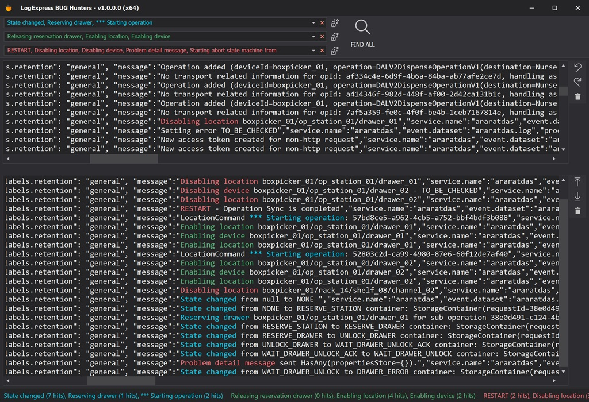

LogExpress

LogExpress è uno strumento avanzato per l'analisi e la gestione dei log delle applicazioni, progettato per aiutare sviluppatori e team di supporto a identificare e risolvere bug con maggiore velocità e precisione. Con un'interfaccia user-friendly e una gestione avanzata dei colori per facilitare la visualizzazione, LogExpress consente di individuare rapidamente problemi specifici all'interno di grandi volumi di dati di log.
Come posso aiutarti?
Scrivimi per farmi sapere di cosa hai bisogno, sarò felice di aiutarti.